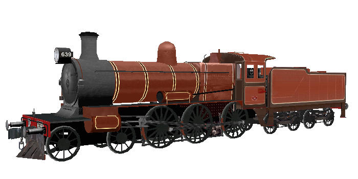

D3 class 4-6-0 Steam Locomotive (Victorian Railways)
original 3D model by Matt Austin
Textures By Richard Lauder
Physics, sound set integration by team-ALCO
Overview
Seven locomotives in package:
- D3 621 with shunter's steps
- D3 635 old-style number boards
- D3 639 in Canadian Red livery (Steamrail)
- D3 639 in black livery (Steamrail)
- D3 639 as Commissioner's Engine (VR)
- D3 658 in black
- D3 688 in black
Package is complete with sensational animated cabview by Kenji Kimura, D3 sounds by Richard Lauder and crew by Paul Gausden.
release2 physics by Ian Bowles, lighting/packaging by Yuri Sos.
Based on a shape by Gavin Woolf.
Locos vary - some have rear headlight on tender, some have independent brake.
The crew provided courtesy of Paul Gausden: see his web site at http://www31.brinkster.com/decapod/
| This locomotive has been designed for use with the LightFx lighting enhancement. The installer will install this enhancement for you. Click on this image for more details. |  |
